Guide utilisateur — package Joomla version 1.0.0
Pour HikaShop (version Starter gratuite suffisante) · Joomla 4.4, 5.x et 6.x · PHP 8.1 à 8.5
Websource · www.websource.fr
Le package permet de vendre un produit avant sa sortie. Pour chaque produit HikaShop (ou variante), vous créez une règle de précommande avec une date de sortie. Tant que la règle est en cours :
À la date de sortie (ou à la fin que vous avez fixée), la règle se termine : le prix revient à la normale, la quantité de stock d'origine est restaurée, et chaque client ayant précommandé reçoit l'e-mail « produit disponible ».
joomla-pkg_websourcepreorder.zip depuis la page Releases du dépôt GitHub.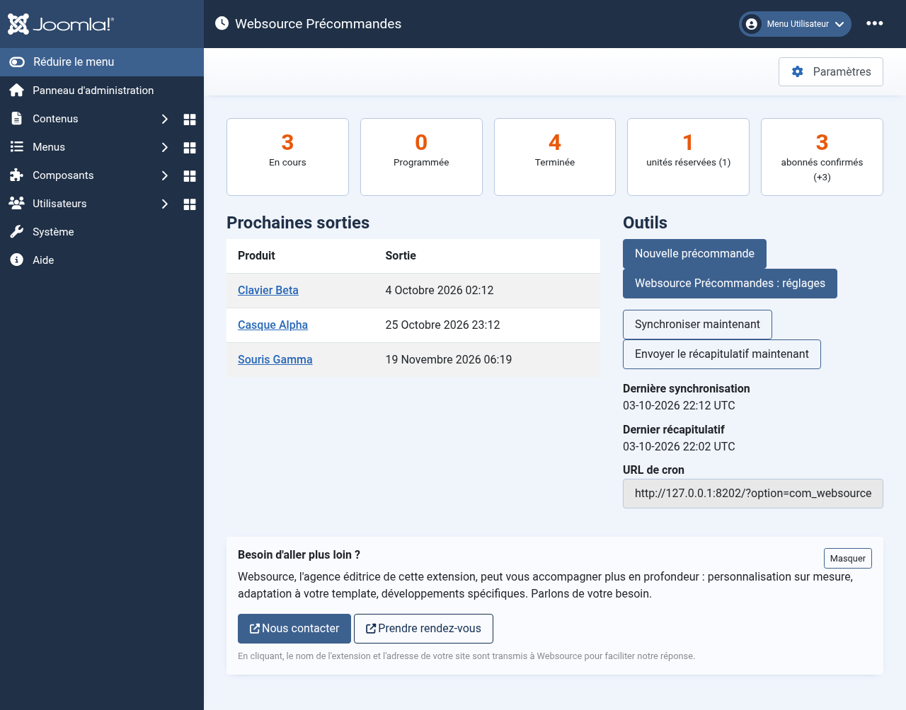
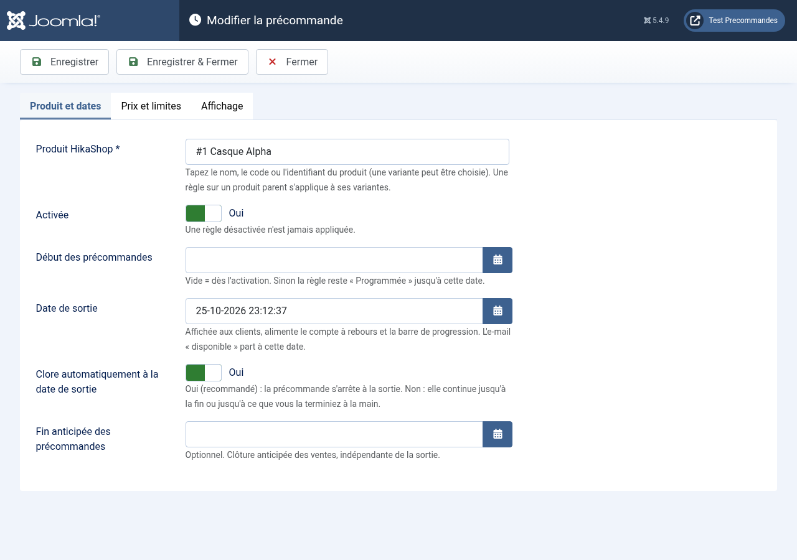
| Champ | Rôle |
|---|---|
| Produit HikaShop | Produit ou variante concerné. Une règle sur un produit parent s'applique à ses variantes ; une règle sur une variante ne concerne que celle-ci. |
| Activée | Une règle désactivée n'est jamais appliquée. |
| Début des précommandes | Vide = dès l'activation. Sinon la règle reste « Programmée » jusqu'à cette date. |
| Date de sortie | Affichée aux clients, alimente le compte à rebours et la barre de progression. L'e-mail « disponible » part à cette date. Les dates sont saisies dans le fuseau horaire de votre compte et enregistrées en UTC. |
| Clore automatiquement à la date de sortie | Oui (recommandé) : la précommande s'arrête à la sortie. Non : elle continue jusqu'à la fin ou jusqu'à ce que vous la terminiez à la main. |
| Fin anticipée | Optionnel. Clôture anticipée des ventes, indépendante de la sortie. |
| Prix de précommande | Prix normal / Prix fixe HT / Remise en % / Remise en montant HT (devise principale de la boutique). |
| Quota total | Nombre maximal d'unités réservables (0 = illimité). Les commandes annulées ou remboursées libèrent le quota. |
| Maximum par commande / par client | Limites d'achat (0 = illimité). La limite par client s'applique aux clients identifiés (compte HikaShop). |
| Mettre à la une | Le produit est choisi par le module « Précommande à la une ». |
| Bandeau / page des précommandes | Inclut ou non le produit dans le bandeau défilant, la page « Toutes les précommandes », les blocs des pages de comptes et le récapitulatif e-mail. |
| Libellé du bouton, message, traductions | Optionnels. Le libellé remplace le texte global du bouton pour ce produit ; le message s'affiche dans le bloc de la fiche produit (HTML simple). Le sous-formulaire « Traductions » permet un texte par langue. |
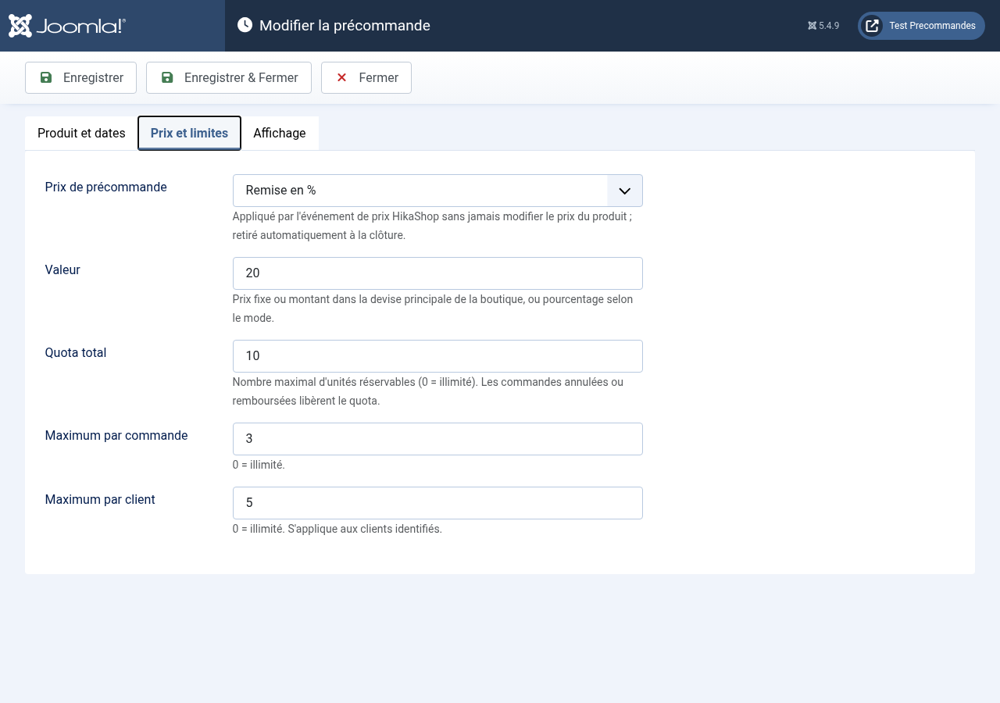
| Statut | Signification |
|---|---|
| Programmée | Désactivée, ou date de début pas encore atteinte. Rien n'est appliqué. |
| En cours | Précommande ouverte : stock, prix, affichage et réservations actifs. |
| Terminée | Date de sortie ou de fin atteinte (ou bouton « Disponible maintenant »). Prix et stock restaurés. |
Les changements de statut sont appliqués par la tâche planifiée / le cron et, en secours, à la première visite du site après l'échéance (réglage « Synchronisation automatique côté boutique », au plus une fois par minute). Le bouton Disponible maintenant (barre d'outils de la liste des règles) termine la règle immédiatement et prévient les acheteurs. Modifier une règle en cours ré-applique automatiquement le stock avec les nouveaux paramètres ; la supprimer restaure l'état d'origine.
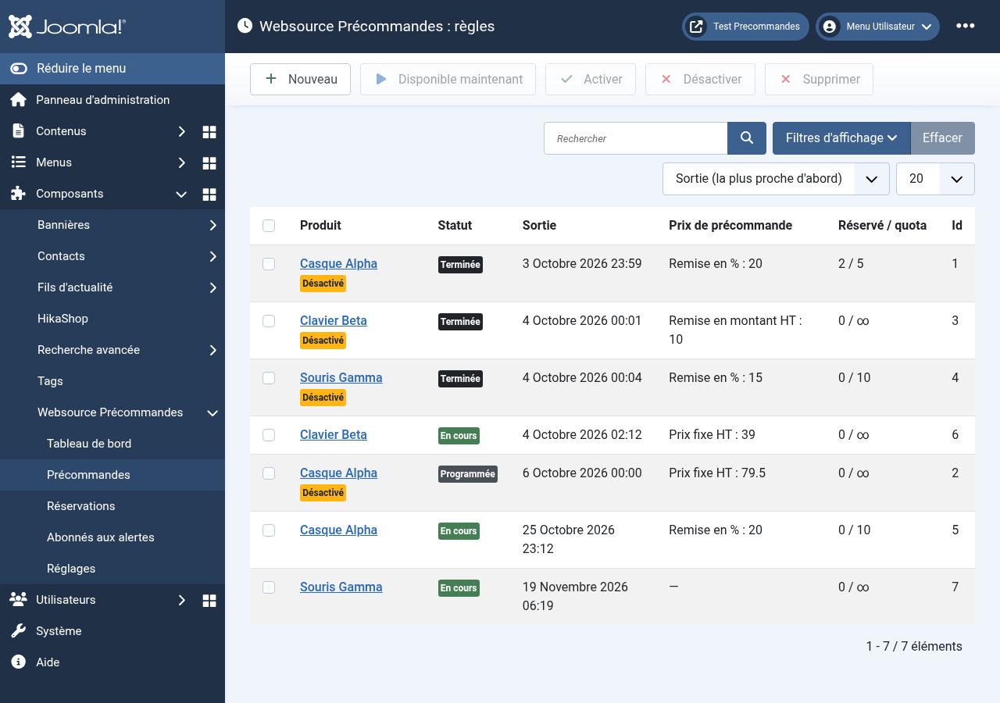
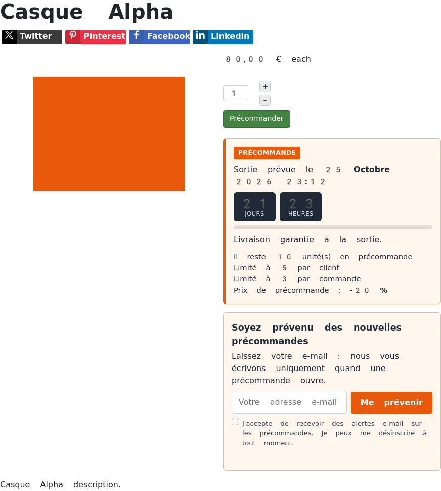
L'option Panier mixte → Interdire le mélange empêche de combiner précommandes et produits en stock dans un même panier : la ligne ajoutée en dernier est refusée avec un message.
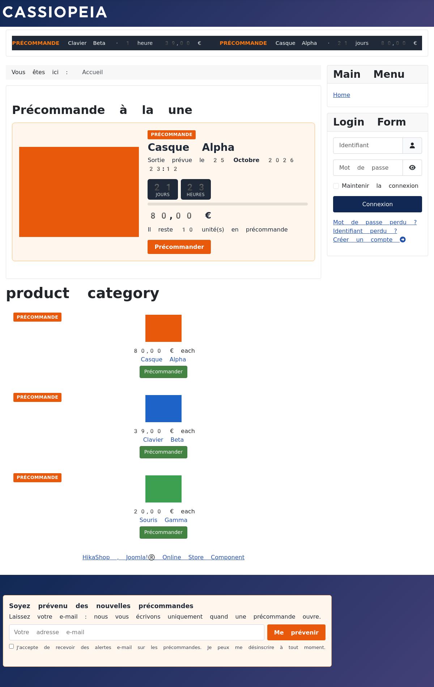
Réglage : Réglages → Compteur → Unités du compteur.
| Mode | Affichage |
|---|---|
| Automatique | ≥ 2 jours : jours + heures ; moins de 2 jours : heures + minutes ; moins d'une heure : minutes + secondes. |
| Jours | Nombre de jours restants uniquement. |
| Jours + heures | Ex. « 12 jours 04 heures ». |
| Jours + heures + minutes | Ex. « 12 jours 04 heures 37 minutes ». |
| … + secondes | Compteur à la seconde. |
Le compteur s'appuie sur l'horloge du serveur (pas de décalage dû à l'ordinateur du visiteur). Quand la date est atteinte, il affiche « Disponible ! ». Compteur, barre de progression et quantité restante peuvent être masqués.
L'onglet Couleurs règle neuf couleurs : principale (boutons, liens), texte sur principale, fond et bordure du bloc, fond et texte du compteur, fond du badge, fond et texte du bandeau. Elles sont publiées sous forme de variables CSS (--wspo-accent, --wspo-on-accent, --wspo-box-bg, --wspo-border, --wspo-count-bg, --wspo-count-text, --wspo-badge-bg, --wspo-ticker-bg, --wspo-ticker-text). L'onglet Général règle le texte du bouton et du badge (vide = traduction fournie ; surchargeable avec les « Remplacements de langue » de Joomla).
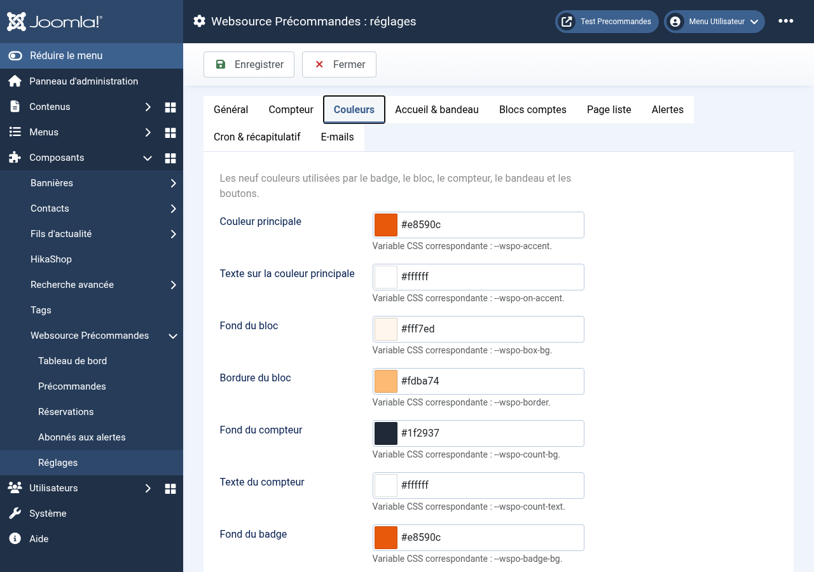
Dans Contenu → Modules du site → Nouveau, choisissez l'un des trois modules Websource, une position de votre template et l'affectation aux pages.
prefers-reduced-motion).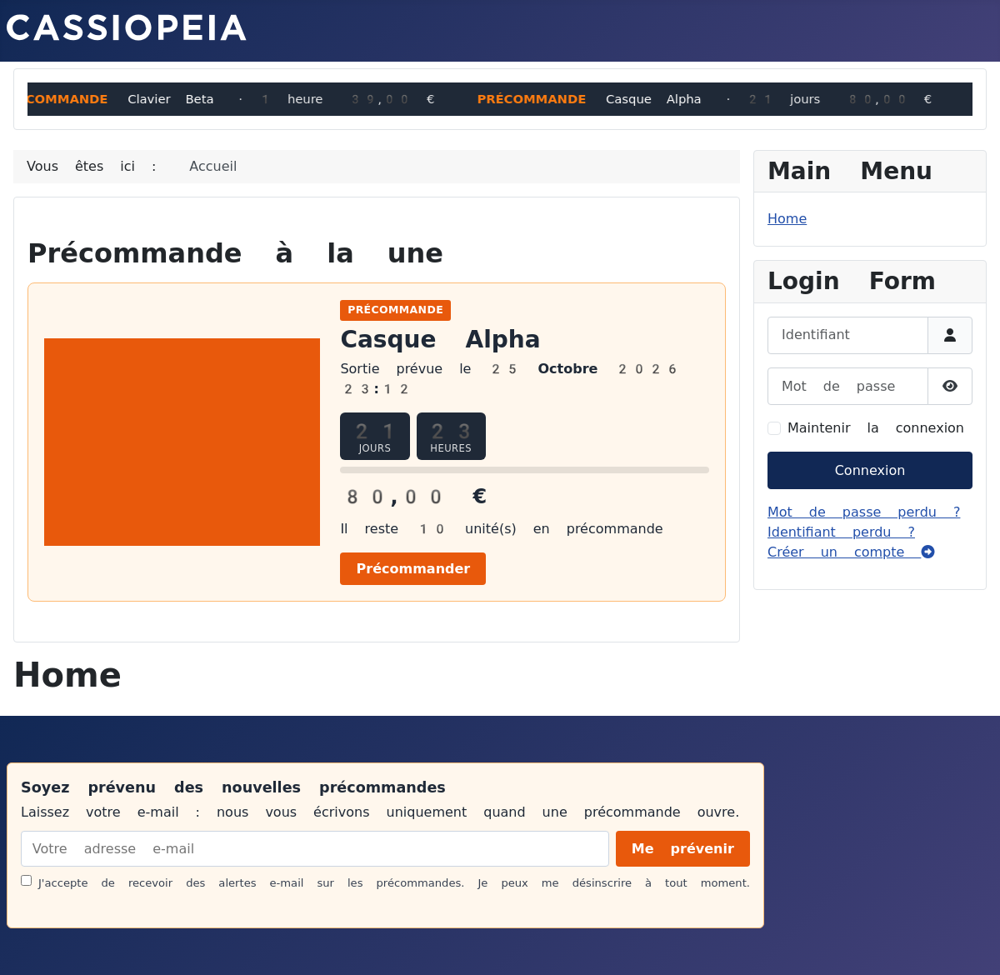
Les valeurs par défaut (titre, vitesse, nombre de produits) se règlent dans l'onglet Accueil & bandeau ; chaque module peut les surcharger.
Dans l'onglet Blocs comptes, activez au choix la page de connexion, d'inscription et de mot de passe / identifiant oublié de Joomla (com_users). Le bloc contient un titre, les prochains produits en précommande (nombre réglable) et, si vous le souhaitez, le formulaire d'alerte. Aucun module n'est nécessaire : le plugin système ajoute le bloc après le formulaire.
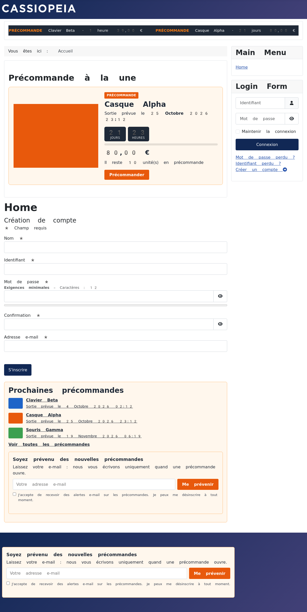
Créez des éléments de menu : Menus → Nouvel élément, type Websource Précommandes → Toutes les précommandes (page publique, groupée par mois de sortie) et Mes précommandes (réservations du client connecté ; un visiteur est renvoyé vers la connexion). Titre, introduction, regroupement par mois, prix et compteur se règlent dans l'onglet Page liste.
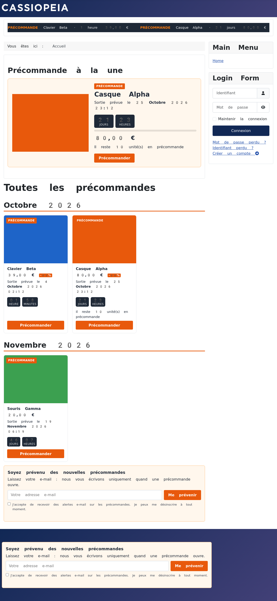
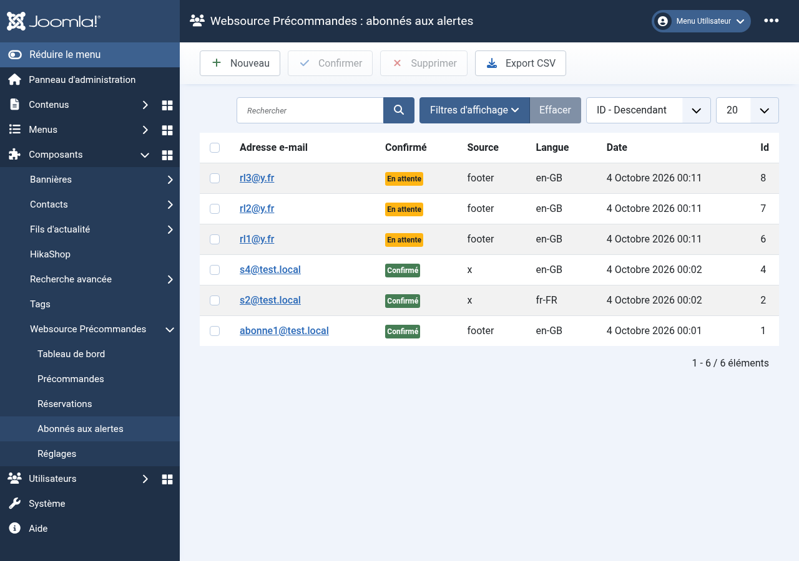
La synchronisation (1) ouvre et clôt les précommandes, (2) prévient les acheteurs à la sortie, (3) envoie le récapitulatif aux abonnés. Deux solutions, au choix (ou les deux) :
Système → Tâches planifiées → Nouveau, types « Précommandes : synchroniser » et « Précommandes : récapitulatif périodique », fréquence de 15 minutes à 1 heure. Les tâches s'exécutent via le planificateur de Joomla (déclenchement paresseux par les visites, ou cron serveur php cli/joomla.php scheduler:run).
live_site dans configuration.php) pour que les liens des e-mails soient corrects.L'adresse exacte, avec votre jeton secret, est affichée dans Réglages → Cron & récapitulatif et sur le tableau de bord :
*/15 * * * * curl -fsSL "https://votre-site.tld/?option=com_websourcepreorder&task=cron.run&token=VOTRE_JETON" > /dev/null
Ajoutez &action=sync ou &action=digest pour limiter l'action. Un jeton incorrect renvoie une erreur 403. Le bouton « Régénérer le jeton » invalide l'ancienne adresse.
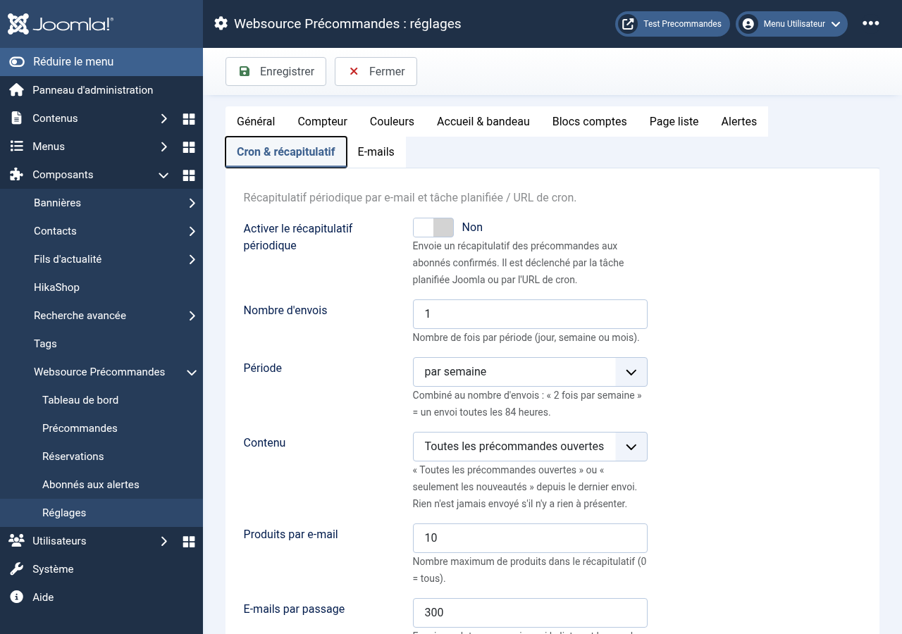
Choisissez la période (jour, semaine, mois) et le nombre d'envois par période : « 2 par jour » = un envoi toutes les 12 heures ; « 1 par semaine » = tous les 7 jours. Le contenu peut être « toutes les précommandes ouvertes » ou « seulement les nouveautés » depuis le dernier envoi. Rien n'est envoyé s'il n'y a rien à présenter. Le bouton Envoyer le récapitulatif maintenant (tableau de bord) force un envoi à tous les abonnés confirmés. Les envois sont faits par lots (300 par passage par défaut) et reprennent automatiquement là où ils se sont arrêtés.
L'onglet E-mails permet de modifier, pour chaque langue, l'objet et le contenu HTML de cinq e-mails. Un champ vide rétablit le texte par défaut. Les trois premiers peuvent être désactivés dans l'onglet Général. Le contenu est inséré dans une enveloppe HTML aux couleurs de votre site (nom du site, couleur principale). Envoyer un test envoie l'e-mail affiché avec des valeurs d'exemple (à l'adresse saisie, sinon la vôtre).
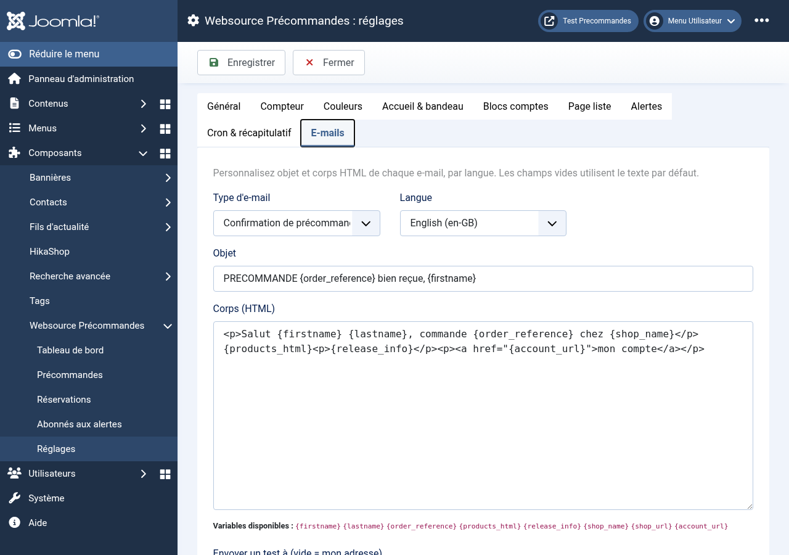
| Variables disponibles | |
|---|---|
| Confirmation de précommande (client) | {firstname} {lastname} {order_reference} {products_html} {release_info} {shop_name} {shop_url} {account_url} |
| Produit disponible (client) | {firstname} {lastname} {order_reference} {product_name} {product_url} {release_date} {shop_name} {shop_url} {account_url} |
| Alerte nouvelle précommande (administrateur) | {customer} {customer_email} {order_reference} {products_html} {shop_name} |
| Confirmation d'inscription (double opt-in) | {confirm_url} {shop_name} {shop_url} |
| Récapitulatif périodique | {products_html} {count} {unsubscribe_url} {list_url} {shop_name} {shop_url} |
{unsubscribe_url} dans le récapitulatif : le lien de désinscription est une obligation légale pour tout e-mail récurrent. Les valeurs sont échappées automatiquement (sauf {products_html}, déjà du HTML sûr).L'écran Réservations liste chaque ligne de commande en précommande : commande, client, produit, quantité, date de sortie et statut (Réservée, Client prévenu, Annulée). Filtres par recherche, statut et règle. Actions : Renvoyer l'e-mail, Annuler la réservation (libère le quota), Rétablir, Export CSV.
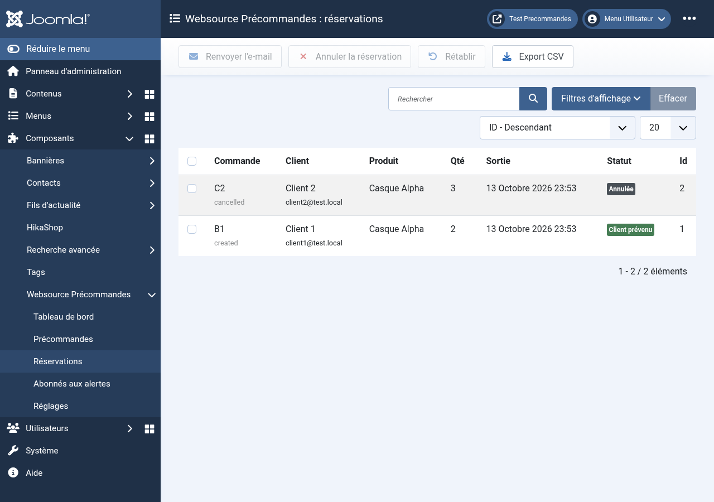
Une réservation est créée à la création de la commande HikaShop (statut « created » compris). Le passage d'une commande aux statuts cancelled ou refunded (liste modifiable dans Réglages → Général) annule la réservation et libère le quota ; le retour vers un autre statut la réactive. Pour ne pas bloquer du quota avec des commandes jamais payées, le réglage Libérer les commandes non payées après (heures) libère automatiquement les réservations dont la commande est restée « created ».
Le package est conçu pour Cassiopeia et s'adapte aux templates standards. Pour modifier le rendu sans toucher au package, copiez un layout vers votre template :
components/com_websourcepreorder/layouts/box.php → templates/VOTRE_TEMPLATE/html/layouts/com_websourcepreorder/box.php
Layouts : box (fiche produit), card (page liste), subscribe, account_block, cart_notice. Modules : templates/…/html/mod_websourcepreorder_*/default.php. Les couleurs sont des variables CSS surchargeables dans la feuille de style du template.
Dans Composants → Websource Précommandes → Paramètres → Permissions : core.manage (accéder au composant), core.create, core.edit (réservations, abonnés), core.edit.state (activer, « Disponible maintenant »), core.delete, core.admin (réglages, jeton de cron). Toutes les actions utilisent les jetons CSRF Joomla, les entrées sont filtrées, les requêtes SQL sont préparées et les sorties échappées.
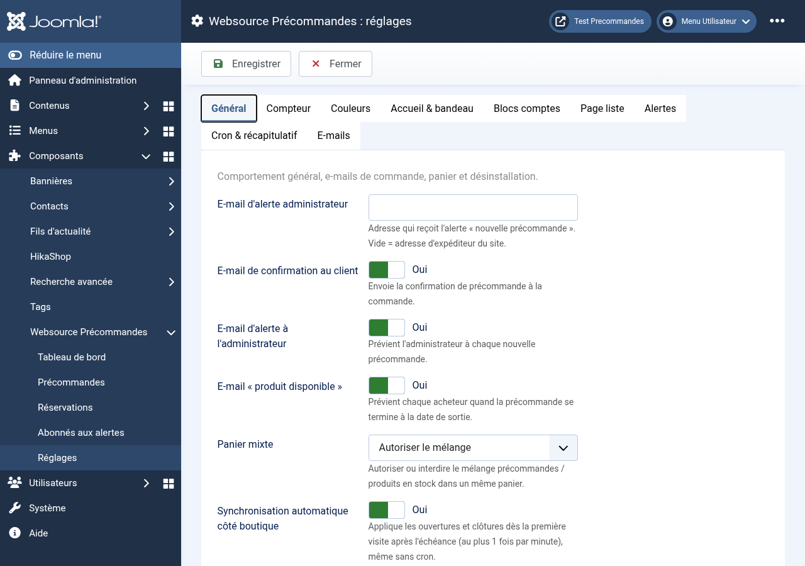
core.admin ou core.manage sur le composant, un encart « Besoin d'aller plus loin ? » : Websource, éditeur de l'extension, peut vous accompagner (personnalisation sur mesure, adaptation à votre template, développements spécifiques). Deux boutons mènent à www.websource.fr/contact (contact et prise de rendez-vous). L'encart n'apparaît jamais en front ni dans les e-mails, il se masque 30 jours en un clic (mémorisé dans le navigateur, sans requête externe). Seul un clic sur les boutons transmet à Websource le nom et la version de l'extension, la version de Joomla et l'adresse de votre site (paramètres utm_* et ws_* de l'URL), ce qui est rappelé en petit sous les boutons. Le code est un layout unique et réutilisable : administrator/layouts/websource_support.php.| Problème | Piste |
|---|---|
| Le bloc n'apparaît pas sur la fiche produit | Vérifiez que la règle est « En cours » et que le plugin système « Websource Précommandes » est activé. Videz le cache Joomla (et le cache de page éventuel). |
| Le bouton reste « Ajouter au panier » | Le template ou une vue HikaShop personnalisée n'utilise pas le bouton standard (attribut data-addtocart) : contactez-nous avec le nom du template. |
| Le bandeau ou le module n'apparaît pas | Vérifiez la position du module (elle doit exister dans votre template), l'affectation aux pages, le statut publié, et qu'une précommande est en cours. |
| Le client ne peut pas ajouter au panier | Quota atteint, limite par commande/client, ou « panier mixte » interdit. Un message explicite est affiché. |
| Le statut ne change pas à la date de sortie | Ni cron, ni tâche planifiée : sans eux, le changement a lieu à la prochaine visite du site (réglage « Synchronisation automatique »). |
| Le prix de précommande ne s'applique pas | Vérifiez que la règle est « En cours » et que le mode de prix n'est pas « Prix normal ». Un plugin tiers qui réécrit les prix après le nôtre peut le masquer. |
| Aucun e-mail reçu | Utilisez « Envoyer un test » et vérifiez Configuration globale → Serveur → E-mail. Les erreurs d'envoi sont écrites dans administrator/logs/websourcepreorder.php. |
Liens des e-mails en localhost ou sans domaine | E-mails envoyés en ligne de commande : renseignez « URL publique du site » dans les réglages. |
| L'URL de cron répond 403 | Jeton incorrect ou régénéré : recopiez l'adresse affichée dans Réglages → Cron. |
scheduler:run). Sur Joomla 4.4, la commande CLI du planificateur échouait dans notre environnement de test indépendamment du package : utilisez l'URL de cron ou le planificateur web.À la désinstallation du package (Système → Gérer → Extensions, type « Package »), les précommandes en cours sont terminées proprement : la quantité de stock d'origine est restaurée. Par défaut, vos règles, réservations, abonnés et modèles d'e-mails sont conservés (réglage Conserver les données à la désinstallation) ; désactivez-le avant de désinstaller pour tout supprimer. Les paramètres du composant sont retirés avec lui.
Websource Précommandes 1.0.0 pour Joomla — © Websource — www.websource.fr — Usage libre non commercial, voir le fichier LICENSE.